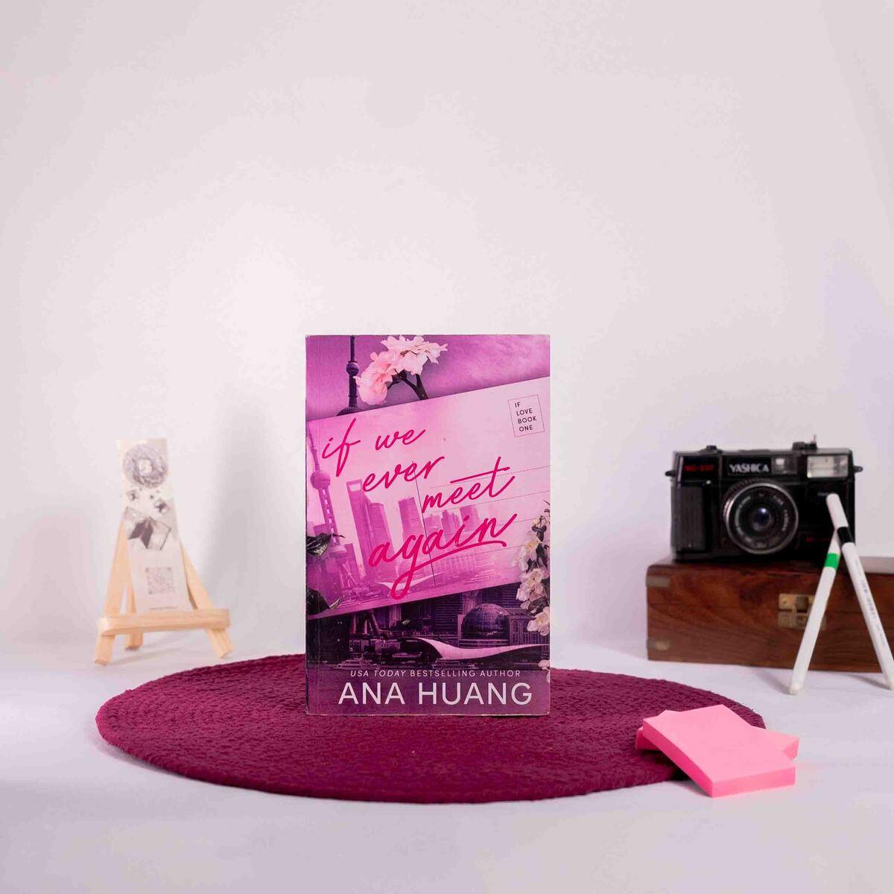

The story is set during a year abroad program in Shanghai and follows two main characters: Farrah Lin, an aspiring interior designer who dreams of falling in love, and Blake Ryan, a
former college football star who is disillusioned with love.
Farrah is a hopeful romantic, while Blake is cynical, believing that love is a con. Their personalities clash, as she is a virgin seeking a fairytale romance, and he avoids commitments,
particularly with someone inexperienced. Despite their differences, they find themselves irresistibly drawn to each other.
As they navigate their time in Shanghai, their relationship evolves from friendship to romance, filled with moments of passion and connection. However, they are aware that their time
together is limited, as external forces threaten to pull them apart. The narrative emphasizes that sometimes, even the strongest love cannot overcome all obstacles.
The novel is characterized by a slow-burn romance, vivid descriptions of the Shanghai setting, and relatable character development. It captures the essence of first love and the
challenges that come with it, ultimately leading to a poignant realization about love's complexities.
Themes
Opposites Attract: The contrasting personalities of Farrah and Blake create tension and chemistry.
Coming of Age: The story explores personal growth and the journey of discovering love for the first time.
Bittersweet Romance: The narrative highlights the idea that love can be both beautiful and painful, setting the stage for the sequel.
If We Ever Meet Again is recommended for readers who enjoy emotional and steamy romances, particularly those set in vibrant locations like Shanghai. The book sets up a continuation
of the story in its sequel, If the Sun Never Sets, which follows the characters five years later.